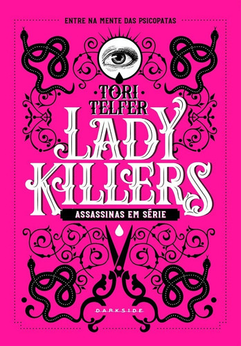

|  |
Quando pensamos em assassinos em série, pensamos em homens.
Mais precisamente, em homens matando mulheres inocentes, vítimas de um apetite atroz por sangue e uma vontade irrefreável de carnificina.
As mulheres podem ser tão letais quanto os homens e deixar um rastro de corpos por onde passam ― então o que acontece quando as pessoas são confrontadas com uma assassina em série?
Quando as ideias de “sexo frágil” se quebram e fitamos os desconcertantes olhos de uma mulher com sangue seco sob as unhas?
Prepare-se para realizar mais uma investigação criminal ao lado da DarkSide® Books e sua divisão Crime Scene®.
Esqueça tudo aquilo que você achava que sabia sobre assassinos letais ― perto de Mary Ann Cotton e Elizabeth Báthory, para citar apenas algumas, Jack, o Estripador ainda era um aprendiz. |